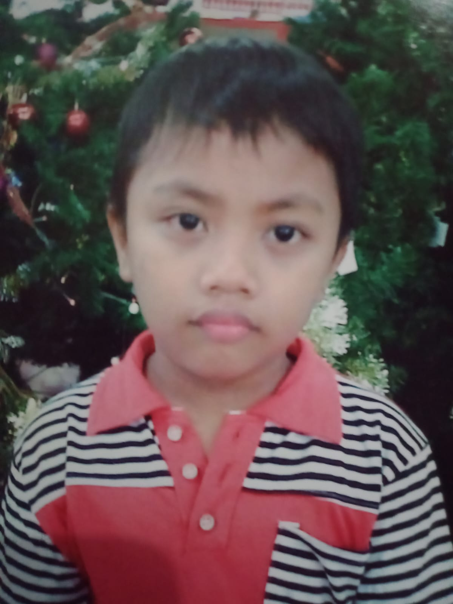

Hello, world — I'm
Informatics Student & Aspiring Developer
I'm a passionate informatics student who loves building things for the web. I enjoy turning ideas into clean, functional code — from simple scripts to full web interfaces.
View my workSaat ini saya sedang mempelajari Informatika dan menjelajahi dunia pengembangan perangkat lunak. Saya senang mempelajari teknologi baru dan membangun proyek yang memecahkan masalah nyata, sekecil apa pun itu.
Ketika tidak sedang coding, saya membaca tentang teknologi, bereksperimen dengan desain, atau berkontribusi pada proyek kolaboratif. Saya percaya perangkat lunak yang hebat dibangun di atas logika yang bersih dan struktur yang matang.
Tech Stack
# status
● open to internships & collabs
Interactive Snake game built using HTML Canvas and JavaScript. Features score system, level system, and smooth neon-style visuals.
Situs blog statis yang dibangun dari awal menggunakan HTML dan CSS. Tata letak bersih yang berfokus pada keterbacaan, dengan tema gelap minimalis dan desain responsif.
Saya selalu terbuka untuk peluang baru, kolaborasi, atau sekadar percakapan ramah tentang teknologi. Silakan hubungi saya melalui salah satu saluran di bawah ini.
Socials